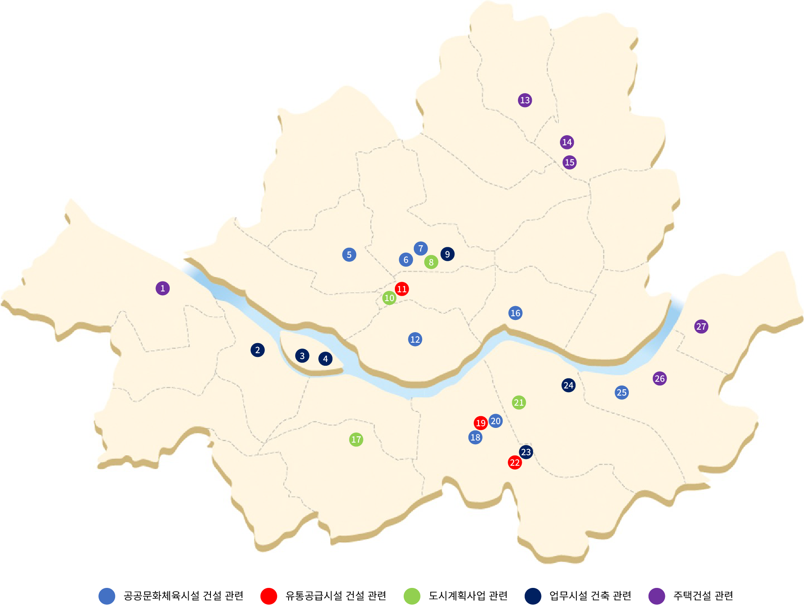

교통영향평가
교통영향평가
교통영향평가는 급속한 도시화에 따른 도시교통혼잡의 가중으로 인하여 교통수요와 교통공급 간의 불균형을 해소하고자 1983년 서울시에서 최초로 도입되었다.
교통영향평가제도는 일정 규모 이상의 건축물 건축이나 도시개발사업, 산업단지, 항만이나 공항, 도로, 철도 건설, 에너지 시설, 관광단지 조성, 민간투자사업 시행에 따라 발생하는 교통량이나 흐름의 변화 및 교통안전에 미치는 영향을 조사·예측·평가하고 그와 관련된 각종 문제점을 최소화할 교통개선대책을 마련하기 위한 평가나 심의를 말한다.
교통영향평가의 대상은 대규모 아파트, 유통시설, 근린생활시설, 문화시설, 종교시설, 운동시설, 의료시설, 업무시설, 숙박시설, 위락시설, 창고시설 등의 건축물이 해당된다. 또한 ‘도시개발법’이나 ‘주거환경정비법’, ‘국토의 계획 및 이용에 관한 법률’, ‘택지개발촉진법’, ‘물류시설의 개발 및 운영에 관한 법률’ 등이 규정한 대형 시설이나 건축물 등도 대상에 포함된다.
교통영향평가 주요 기록
서울기록원이 보유한 교통영향평가는 주요 기록 시리즈는 ‘교통수요관리 기록’으로 공공문화체육시설 건설 관련, 유통공급시설 건설 관련, 도시계획사업 관련, 업무시설 건축 관련, 주택건설 관련 등이 있으며, 교통영향평가는 서울의 전 지역에서 수행되고 있음을 알 수 있다.

※ 명칭 클릭 시 관련 페이지로 이동합니다.
-
1
-
2
-
3
-
4
-
5
-
6
-
7
-
8
-
9
-
10
-
11
-
12
-
13
-
14
-
15
-
16
-
17
-
18
-
19
-
20
-
21
-
22
-
23
-
24
-
25
-
26
-
27